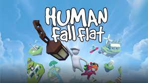
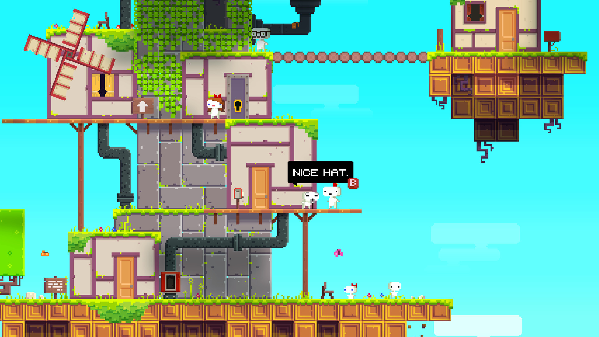

Kultová adventúrna séria Polda je späť! Zo sídla Americkej filmovej akadémie v Beverly Hills zmizne zapečatený zoznam víťazov jednotlivých Oscarových kategórií. Ceremoniál je ohrozený! Akadémia požiada o pomoc národnú bezpečnostnú radu zloženú z najslávnejších detektívov – Sherlocka Holmesa, Ružového pantera, Jamese Bonda, Colomba, Lisbeth Salanderovej a Jessicy Fletcherovej. Bohužiaľ, väčšina z členov v nominovaných filmoch hrá. Nemôžu sa podieľať na vyšetrovaní a tak je nutné povolať niekoho stríborným plátnom nepobozkaného. Nášho Pankráca!
Price: 50€
Minesweeper Deluxe
(Image credit: IDK)
Minesweeper rules are very simple. The board is divided into cells, with mines randomly distributed. To win, you need to open all the cells. The number on a cell shows the number of mines adjacent to it. Using this information, you can determine cells that are safe, and cells that contain mines. Cells suspected of being mines can be marked with a flag using the right mouse button.
Price: 10€
Tetris Effect
(Image credit: Capleee)
Tetris® is the addictive puzzle game that started it all, embracing our universal desire to create order out of chaos. The Tetris game was created by Alexey Pajitnov in 1984—the product of Alexey’s computer programming experience and his love of puzzles. In the decades to follow, Tetris became one of the most successful and recognizable video games, appearing on nearly every gaming platform available. This page is the official destination for free online single-player Tetris. Click PLAY to start playing one of the world’s most popular puzzle games now!
Price: 30€ 20€
Human Fall Flat

(Image credit: Capleee)
Human Fall Flat is a co-op, physics-based puzzle game where you play as Bob. As Bob, you’re tasked with exploring various landscapes and solving puzzles along the way, with the only goal being to reach the exit. Thanks to the advanced physics engine, there are countless ways to solve puzzles. You can take on the experience alone, but Human Fall Flat is best played with friends. The game features a two-player couch co-op, as well as online multiplayer for up to eight players. Outside of solving puzzles, you can experiment with Human Fall Flat’s physics engine, too. Everything in the game world is up for grabs, allowing you to play and experiment to your heart’s content.
Price: 20€ 5€
Fez

(Image credit: Capleee)
Right next to Braid, Fez stands as one of the most important early indie puzzle platformers of all time. Also made by a team of just two individuals, this game put a literal twist on your usual puzzle platformer by allowing you to spin your perspective in 3D to completely alter how you interact and view the world. Aside from some genius puzzles that require out of the box thinking, there’s also a very deep and hidden puzzle within the game for anyone looking to really go down tthe rabbit hole


.jpg)